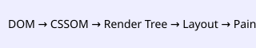

브라우저 렌더링 과정은 HTML 파싱으로 DOM을, CSS 파싱으로 CSSOM을 만든 뒤 렌더 트리를 구성하고 레이아웃과 페인트를 수행합니다.

자바스크립트 이벤트 루프는 콜 스택이 비면 마이크로태스크 큐를 먼저 비우고 매크로태스크를 하나 실행합니다.
setTimeout(() => console.log('macro'));
Promise.resolve().then(() => console.log('micro'));
// 출력: micro → macroFlexbox는 1차원, Grid는 2차원 레이아웃에 적합합니다.
Block Formatting Context는 float과 margin 상쇄를 격리합니다.
스크롤 위치 복원 테스트를 위한 반복 문단입니다.